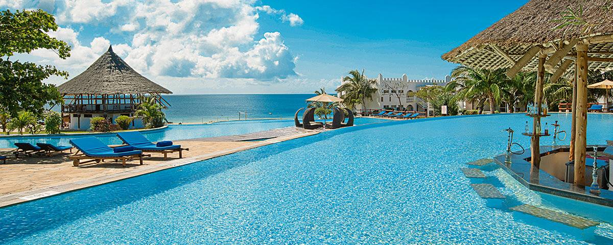
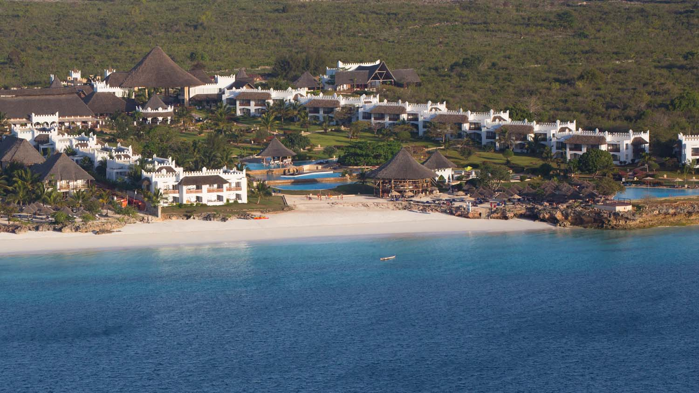

Gold Zanzibar Beach House & Spa
Overlooking a beach of crisp white sand, Gold Zanzibar Beach House & Spa is located on the northern tip of the Island paradise of Zanzibar. Set in the Kendwa area, this beachside property is conveniently situated around a one hour drive away from the international airport and due to its positioning is not affected by the tides, as such guests can swim in the ocean at any time of the day.
Unguja, also known as Zanzibar Island, is the main island in the Tanzanian archipelago of Zanzibar. Stone Town, part of Zanzibar City, is an old trade center, with mosques and winding lanes. The 1883 House of Wonders is a former sultan’s palace with a clock tower. The Old Fort now houses a cultural center and a stone amphitheater. Underground aqueducts fed hot water to the late-19th-century Hamamni Persian Baths.
Guests at Gold Zanzibar can expect an excellent spa experience in the hotel's recreation of a Balinese village, in which guests are treated to a variety of treatments delivered by qualified therapists. Guests are also welcome to make use of a fully equipped gym and the hotel pool. Dining is an experience in itself, with the menu providing choices of both local and international cuisine.

Royal Zanzibar Beach Resort, Zanzibar, Tanzania
Known as the Spice Island, the beautiful island of Zanzibar on Africa’s east coast is bursting with culture and history, seemingly at odds with its idyllic geography of white-sand beaches and palms swaying lazily in the sea breeze. Together this makes Zanzibar a fabulous place to explore as well as a dream to relax and unwind. A rich fusion of African, Arab and Colonial History makes for the islands heritage and offers an escape like no other.

Royal Zanzibar Beach Resort
Royal Zanzibar Beach Resort is one of the most romantic hotels in Zanzibar and the perfect honeymoon getaway. On the edge and the Indian Ocean, Royal Zanzibar Beach Resort welcomes guests to a luxury tropical sanctuary, where greetings of warm smiles and gentle breezes fill each day.
©2019 Vacation Spots
Top